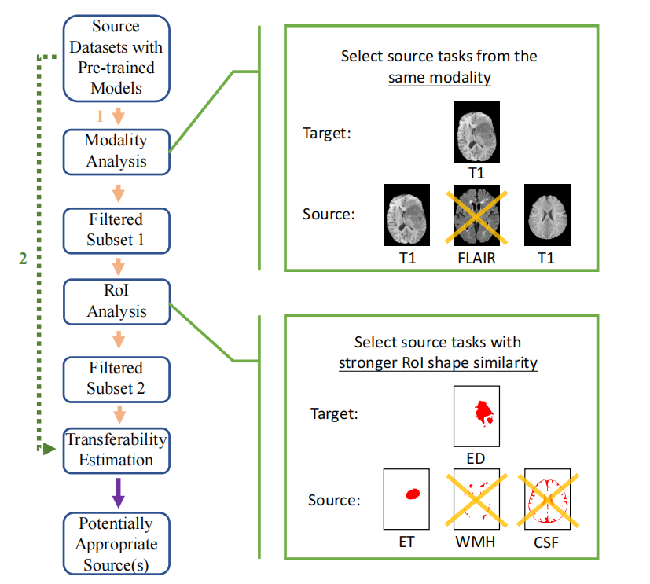

When we have a pool of source tasks and a target task, we need to find out which source task we should transfer from in order to achieve the best transfer performance on the target task.
The most common source selection approach is to fine-tune each source model on the target task to obtain a transfer accuracy on the target test set. This transfer accuracy is called the ground truth transferability, which can be represented by a certain segmentation accuracy evaluation metric, such as Dice score. Then the task that corresponds to the source model that achieves the best transfer accuracy will be selected as the most appropriate source. However, this naive method is very computationally expensive and may become very inefficient when the number of source tasks is too large.
Inspired by the differences in modalities and RoI shapes of medical image segmentation tasks, we propose a source selection framework that incorporates the analysis of image characteristics with current state-of-the-art transferability estimation metrics. Given a pool of source tasks and a target task, we propose to analyze the image characteristics of tasks before computing transferability estimation metrics. Specifically, our framework consists of three steps: modality analysis, RoI anaylsis and transferability estimation, as shown in following flow chart.

In the following, we provide an interactive demo for source-task selection over 16 candidate source tasks and two target tasks. The data for these tasks come from the FeTS 2021 brain tumor segmentation datasets. Each task is identified by its modality (T1-weighted (T1), T2-weighted (T2), Fluid-Attenuated Inversion Recovery (FLAIR), and T1-Weighted Contrast-Enhanced (T1CE)), label (edematous tissue (ED), enhancing tumor (ET), and necrotic tumor core (NCR)), and partition.
e.g., “ET-14-T1” represents the task of enhancing tumor segmentation on T1 modality using data from partition 14.
Visualization of 16 source tasks
| [[ result[(i-1)*4+j-1].source ]] |
Select one of sample tasks as the target task to view the source selection result
ET-22-T2
For this target task ET-22-T2, its labels is enhancing tumor(ET), and its modality is T2-weighted (T2).This task is a little part of ET-T2 this big dataset.
Use the following checkboxes to decide which filtering method to perform, or both
Choose OTCE or H-Score as the transferability estimation metric to further evaluate and rank the transferability of source tasks selected from the previous step.
Use the slider to change the transferability threshold and click predict to update the result.
filter by modality
filter by ROI
final result
Ground-truth
Move the mouse to the source task to view detailed information and performance.
Left: the groundtruth segmentation mask of the target task
Right: the predicted masks obtained by fine-tuning each source model on the target task.
Source tasks selected by proposed algorithm at different steps will be highlighted with different colors.
Predict Table(s)
| [[ `${result[(i-1)*4+j-1].source}: ${result[(i-1)*4+j-1].dice}` ]] |